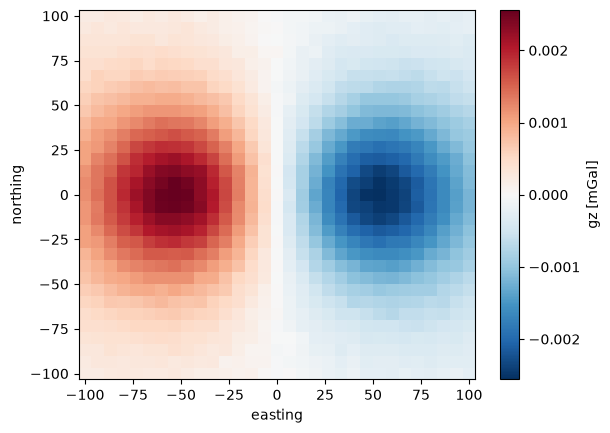
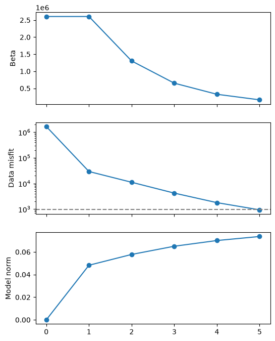
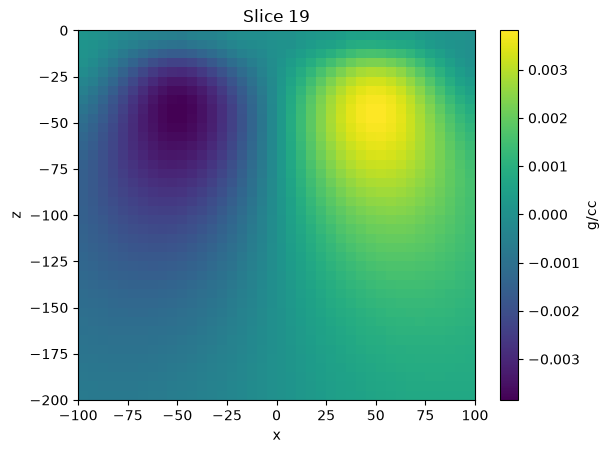

Gravity Inversion#
Let’s start this gravity inversion example by generating a synthetic gravity dataset that consists in two prisms with opposite density constrast:
import bordado as bd
import harmonica as hm
import numpy as np
import xarray as xr
# Create some synthetic data
# ==========================
# Define a set of observation points
region = (-100, 100, -100, 100)
shape = (31, 31)
height = 0
coordinates = bd.grid_coordinates(
region, shape=shape, non_dimensional_coords=height
)
# Define two rectangular prisms with different densities
prisms = [
(-60, -40, -10, 10, -70, -50),
(40, 60, -10, 10, -70, -50),
]
densities = np.array([-200, 200]) # SI units
# Compute the gz field they generate on the observation points
gz = hm.prism_gravity(coordinates, prisms, densities, field="g_z")
gz *= -1 # Invert sign to work with upward component
# Add noise
stderr = np.max(np.abs(gz)) * 0.01
gz += np.random.default_rng(seed=51).normal(scale=stderr, size=gz.shape)
gz_std = stderr * np.ones_like(gz)
# Build an xr.DataArray with the synthetic data
dims = ("northing", "easting")
easting, northing, upward = coordinates
easting, northing = easting[0, :], northing[:, 0]
coords = {"easting": easting, "northing": northing, "upward": (dims, upward)}
dataset = xr.Dataset({"gz": (dims, gz), "gz_std": (dims, gz_std)}, coords=coords)
dataset
<xarray.Dataset> Size: 24kB
Dimensions: (northing: 31, easting: 31)
Coordinates:
* northing (northing) float64 248B -100.0 -93.33 -86.67 ... 86.67 93.33 100.0
* easting (easting) float64 248B -100.0 -93.33 -86.67 ... 86.67 93.33 100.0
upward (northing, easting) float64 8kB 0.0 0.0 0.0 0.0 ... 0.0 0.0 0.0
Data variables:
gz (northing, easting) float64 8kB 0.0002054 0.0002152 ... -0.0002245
gz_std (northing, easting) float64 8kB 2.575e-05 2.575e-05 ... 2.575e-05# Plot synthetic data
import matplotlib.pyplot as plt
dataset.gz.plot.pcolormesh(cbar_kwargs={"label": "gz [mGal]"})
plt.show()

Start by defining SimPEG’s gravity simulation for the inversion:
import discretize
import simpeg
from simpeg.potential_fields import gravity
# Define the mesh
h = [(5.0, 40)]
mesh = discretize.TensorMesh(h=[h, h, h], origin="CCN")
# Define gravity survey based on the location of the observation points
easting, northing = dataset.easting, dataset.northing
easting, northing = np.meshgrid(easting, northing)
coordinates = (easting, northing, dataset.upward.values)
locations = np.vstack(tuple(c.ravel() for c in coordinates)).T
receivers = gravity.Point(locations, components="gz")
source = gravity.SourceField(receiver_list=[receivers])
survey = gravity.Survey(source)
# Define SimPEG's gravity simulation
simulation_simpeg = gravity.Simulation3DIntegral(
mesh, survey=survey, rhoMap=simpeg.maps.IdentityMap(mesh)
)
We need to wrap the simulation to make it compatible with the new inversion framework:
import inversion_ideas as ii
simulation = ii.WrappedSimulation(simulation_simpeg, store_jacobian=True)
Now we can start defining the objective function we want to invert. Let’s start by defining the data misfit using the synthetic data, its errors, and the wrapped simulation:
# Define the data misfit
data = dataset.gz.values.ravel()
uncertainties = dataset.gz_std.values.ravel()
data_misfit = ii.DataMisfit(data, uncertainties, simulation)
Now let’s continue with the regularization:
initial_model = np.zeros(mesh.n_cells)
depth_weights = simpeg.utils.depth_weighting(mesh, 0) ** 2
smallness = ii.Smallness(mesh=mesh, cell_weights=depth_weights)
flatness_x, flatness_y, flatness_z = tuple(
ii.Flatness(mesh=mesh, direction=direction, cell_weights=depth_weights)
for direction in ("x", "y", "z")
)
alpha_x, alpha_y, alpha_z = tuple(
ii.utils.estimate_tradeoff_parameter(smallness, flatness, initial_model)
for flatness in (flatness_x, flatness_y, flatness_z)
)
model_norm = (
smallness
+ alpha_x * flatness_x
+ alpha_y * flatness_y
+ alpha_z * flatness_z
).flatten()
model_norm
Estimate a trade-off parameter between the data_misfit and the model_norm, and use it as an initial value for the hyperparams.CooledMultiplier:
# Define objective function
beta_0 = 4 * ii.utils.estimate_tradeoff_parameter(data_misfit, model_norm, initial_model)
beta = ii.hyperparams.CooledMultiplier(beta_0, cooling_factor=2)
beta
And finally, define the objective function:
phi = data_misfit + beta * model_norm
phi
Build the inversion#
Define a stopping condition: stop the inversion if the \(\chi\) factor falls below 1:
stopping_criterion = ii.conditions.ChiTarget(data_misfit, chi_target=1.0)
Create a dynamic Jacobi preconditioner that will get updated throughout the inversion.
Since we’ll need the Inversion to pass it to the minimizer, we’ll pass it to it through the minimizer_kwargs:
preconditioner = ii.JacobiPreconditioner(phi)
minimizer_kwargs = {"preconditioner": preconditioner}
Now we can define the inversion with:
the objective function we want to invert (
phi),the initial model we’ll use to start the inversion process,
a
minimize.conjugate_gradientas the minimizer,the
beta.updatemethod as the only directive,the
ChiTargetcondition as a stopping criterion,and the preconditioner inside the
minimizer_kwargsdictionary.
inversion = ii.Inversion(
phi,
initial_model,
ii.minimize.conjugate_gradient,
directives=[beta.update],
stopping_criterion=stopping_criterion,
minimizer_kwargs=minimizer_kwargs,
)
And run it!
inverted_model = inversion.run()
We can access the inversion.log and convert it to a pandas.DataFrame, and also use it to plot convergence curves:
log = inversion.log.to_pandas()
log
| beta | phi_d | phi_m | beta * phi_m | phi | chi | |
|---|---|---|---|---|---|---|
| iter | ||||||
| 0 | 2.604651e+06 | 1.667546e+06 | 0.000000 | 0.000000 | 1.667546e+06 | 1735.219131 |
| 1 | 2.604651e+06 | 2.929021e+04 | 0.048238 | 125644.227863 | 1.549344e+05 | 30.478888 |
| 2 | 1.302325e+06 | 1.115004e+04 | 0.057777 | 75244.585184 | 8.639462e+04 | 11.602535 |
| 3 | 6.511627e+05 | 4.209258e+03 | 0.065028 | 42343.687120 | 4.655295e+04 | 4.380081 |
| 4 | 3.255814e+05 | 1.787452e+03 | 0.070073 | 22814.356969 | 2.460181e+04 | 1.859991 |
| 5 | 1.627907e+05 | 9.372855e+02 | 0.073635 | 11987.104904 | 1.292439e+04 | 0.975323 |
fig, axes = plt.subplots(nrows=3, ncols=1, sharex=True, figsize=(6, 8))
axes[0].plot(log.index, log.beta, "o-")
axes[0].set_ylabel("Beta")
axes[1].plot(log.index, log.phi_d, "o-")
axes[1].axhline(data_misfit.n_data, linestyle="--", color="grey")
axes[1].set_ylabel("Data misfit")
axes[1].set_yscale("log")
axes[2].plot(log.index, log.phi_m, "o-")
axes[2].set_ylabel("Model norm")
plt.show()

Finally, let’s plot the model:
(tmp,) = mesh.plot_slice(inverted_model, normal="Y", slice_loc=0)
plt.colorbar(tmp, label="g/cc")
plt.show()
